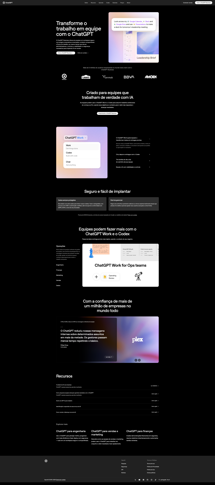
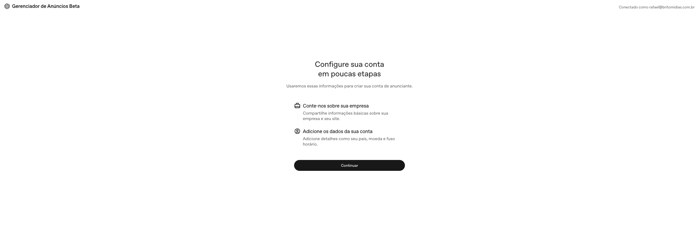
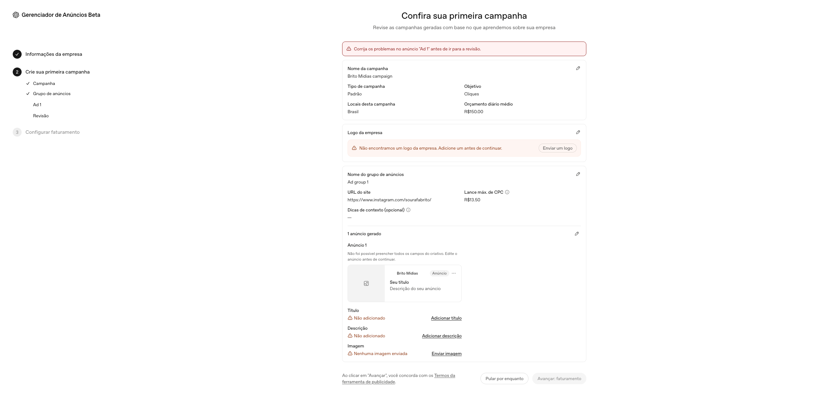
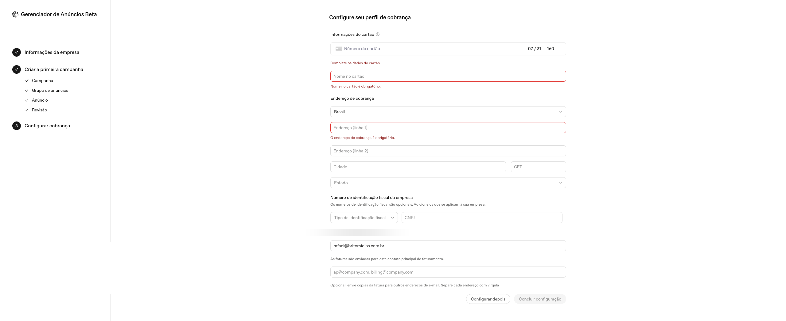
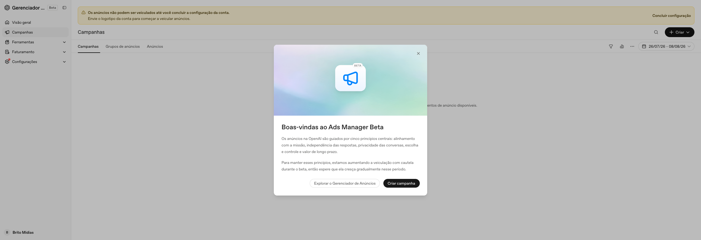
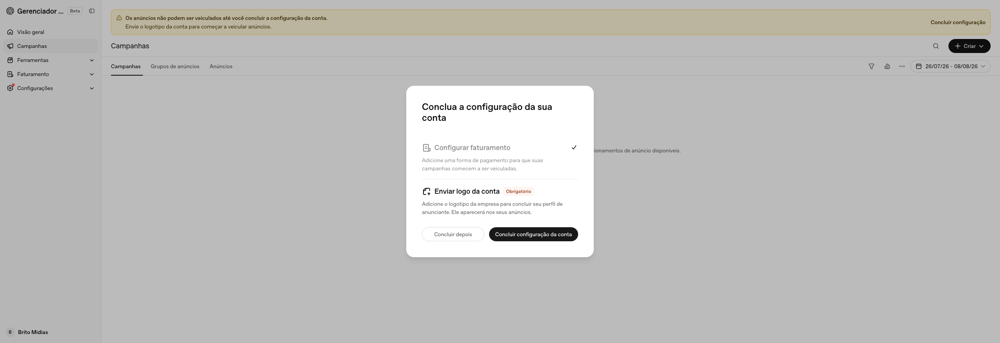
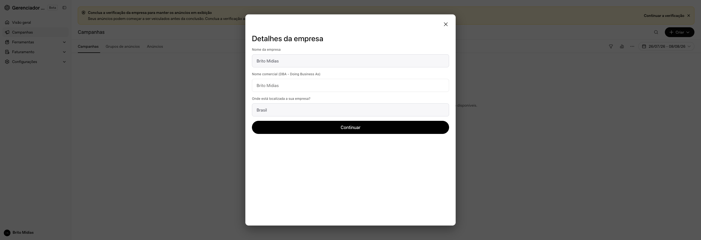
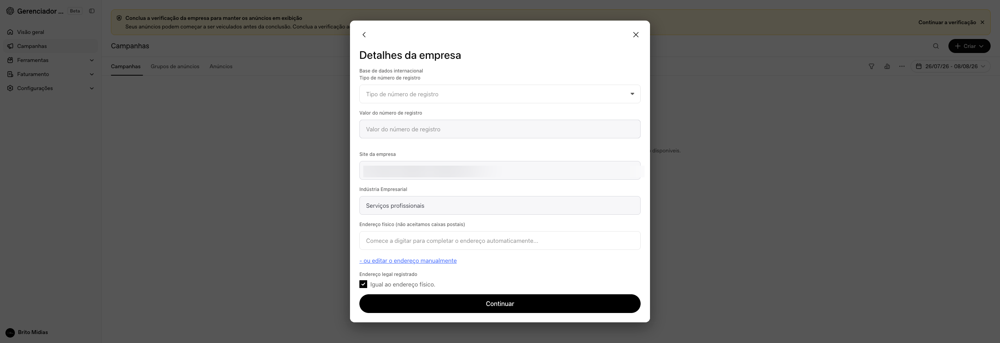
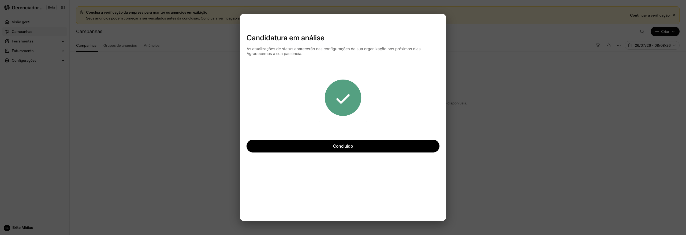
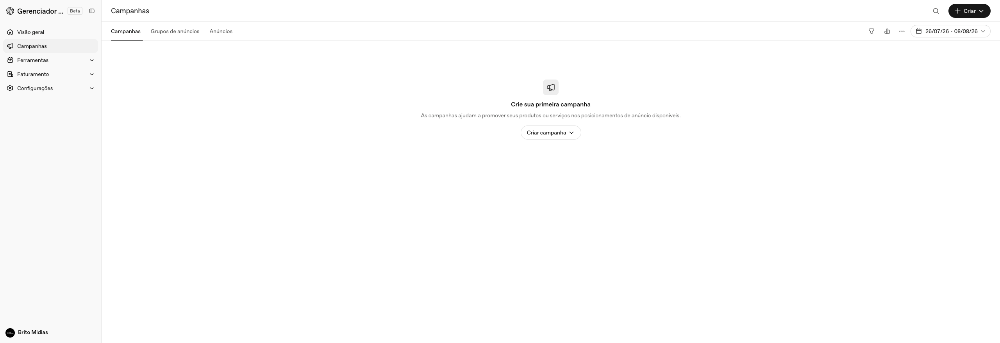

Passo a passo completo para criar sua conta no Gerenciador de Anúncios do ChatGPT (ads.openai.com) do zero até o acesso ao painel.
Siga cada etapa na ordem indicada. O processo leva de 10 a 15 minutos e você precisará de um e-mail de acesso e dados básicos da empresa.
Abra o navegador e acesse diretamente o site do Gerenciador de Anúncios do ChatGPT.
Na página do Gerenciador de Anúncios do ChatGPT, clique no botão para começar a criação da conta.

O sistema pode exibir um aviso sobre o tipo de e-mail. Se quiser usar o e-mail atual, clique em "Continuar com a conta atual". Para trocar de conta, clique em "Trocar de conta".
Na tela de login, clique em "Criar uma conta" para iniciar o cadastro com seu e-mail, Google ou Apple.
O ChatGPT envia um código de verificação para o seu endereço de e-mail. Abra sua caixa de entrada, copie o código e cole no campo indicado.
Informe sua data de nascimento para verificação de idade. Preencha o campo e clique em "Continuar".
Após o login, o sistema exibe a tela de boas-vindas ao Gerenciador de Anúncios. Clique para iniciar a configuração em poucas etapas.

Informe o nome da empresa, o site e o setor em que atua. Preencha todos os campos e avance para a próxima etapa.
Revise as informações exibidas (país e tipo de conta). Confirme que estão corretas e clique em "Continuar".
O sistema sugere criar sua primeira campanha. Se preferir fazer isso depois, clique em "Configurar depois" para avançar diretamente para o painel.

Você pode criar a primeira campanha depois, diretamente pelo painel do Gerenciador de Anúncios.
Preencha os dados de cartão de crédito, endereço de cobrança e o e-mail para envio de faturas. Clique em "Concluir configuração" ao terminar.

Conta criada com sucesso! O painel do Gerenciador de Anúncios Beta já está disponível para você começar a criar campanhas.

O sistema pode solicitar a conclusão de algumas configurações. Clique em "Continuar a verificação" para completar o perfil da empresa.

No modal "Detalhes da empresa", selecione o tipo de número de registro, preencha o valor correspondente e continue.

Complete o modal com o site da empresa (ou perfil do Instagram), a indústria empresarial e o endereço físico. Clique em "Continuar".

Após preencher os detalhes, sua conta entra em análise. O ChatGPT Ads vai revisar as informações e liberar o acesso completo em breve.

Com a conta aprovada, acesse novamente ads.openai.com para entrar no painel. A partir daqui você pode criar campanhas, grupos de anúncios e acompanhar os resultados.

Seu Gerenciador de Anúncios do ChatGPT está pronto. Agora é só criar suas primeiras campanhas e acompanhar os resultados pelo painel.